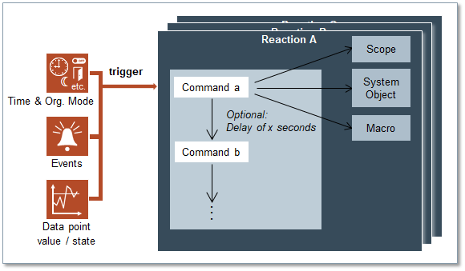

Reactions

This section provides reference and background information for configuring reactions in Desigo CC. For related procedures, see the step-by-step section.

This section provides reference and background information for configuring reactions in Desigo CC. For related procedures, see the step-by-step section.